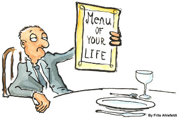

Menus
Introduction
 Most people, if confronted with the word "menu", will immediately think of a menu in a restaurant. Even though the menu of a restaurant and the menu of a computer program have at first glance nothing in common, we can see, that yet the have a lot in common. In a restaurant, a menu is a presentation of all their food and beverage offerings, while in a computer application it presents all the commands and functions of the application, which are available to the user via the grafical user interface.Menus in GUIs are presented with a combination of text and symbols to represent the choices. Selecting with the mouse (or finger on touch screens) on one of the symbols or text, an action will be started. Such an action or operation can for example be the opening or saving of a file, or the quitting or exiting of an application.
A context menu is a menu in which the choices presented to the user are modified according to the current context in which the user is located.
We introduce in this chapter of our Python Tkinter tutorial the pull-down menus of Tkinter, i.e. the lists at the top of the windows, which appear (or pull down), if you click on an item like for example "File", "Edit" or "Help".
A Simple Menu Example
The following Python script creates a simple application window with menus.
from Tkinter import *
from tkFileDialog import askopenfilename
def NewFile():
print "New File!"
def OpenFile():
name = askopenfilename()
print name
def About():
print "This is a simple example of a menu"
root = Tk()
menu = Menu(root)
root.config(menu=menu)
filemenu = Menu(menu)
menu.add_cascade(label="File", menu=filemenu)
filemenu.add_command(label="New", command=NewFile)
filemenu.add_command(label="Open...", command=OpenFile)
filemenu.add_separator()
filemenu.add_command(label="Exit", command=root.quit)
helpmenu = Menu(menu)
menu.add_cascade(label="Help", menu=helpmenu)
helpmenu.add_command(label="About...", command=About)
mainloop()
It looks like this, if started: